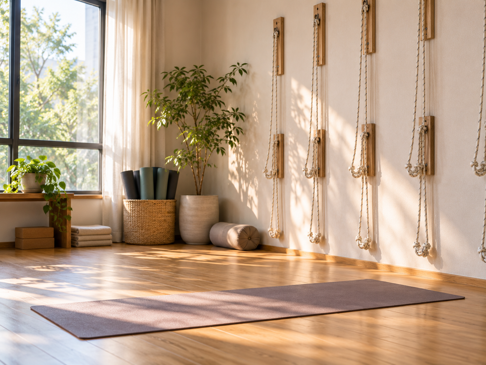

早上練還是晚上練比較好？先看身體狀態跟生活怎麼安排

- 身體在早上與晚上的狀態確實不同：早上通常比較緊，晚上活動一整天後關節相對鬆。
- 但這個差異沒有大到能決定「哪個時段才對」——它只影響你需要多少暖身，不影響能不能練。
- 晚上練會不會睡不著？溫和的練習多數人不會，強度高又太接近睡前的則因人而異。
- 對 40 歲之後的生活來說，時段選擇往往不是身體問題，是家庭與工作排得開排不開的問題。
決定要開始練了，接下來就會遇到一個很實際的問題：要排早上還是晚上？網路上兩種說法都有人講，聽起來都有道理。這篇想把身體層面的差異講清楚，也把大家比較少討論、但實際上更關鍵的那一面講出來。
早上跟晚上的身體，狀態確實不一樣
這個差異是真的，不是心理作用，但它的影響可能沒有你以為的那麼大。
早上：剛起床的身體比較緊，這很正常
經過一整夜幾乎沒有活動的睡眠，關節周圍的循環變慢、肌肉張力還沒完全喚醒，多數人早上起床時會覺得身體比較僵、動作幅度比平常小。這是正常現象，不代表你的柔軟度變差，也不代表早上不適合練——它代表的是：早上練習時，暖身需要做得更完整一點，不適合一開始就追求最大幅度。
晚上：活動一整天之後，關節通常比較鬆
白天走動、做家事、上下班的累積活動量，會讓身體到了下午與晚上處在相對「已經打開」的狀態。同一個動作，晚上做起來常常會覺得比早上輕鬆一些，能到的位置也比較深。這是晚上練習比較被喜歡的原因之一。
但要補一句誠實的話：這個「比較鬆」有時候會帶來一個小陷阱——因為感覺做得比較深，反而容易不小心超過身體當下能承受的範圍。柔軟度好的時候更需要留意界線，可以參考拉筋拉越大力越有效？當心過度伸展的反效果。
早上練，適合哪些人
- 希望一天的開始有個固定節奏的人：先把自己的事情做完，後面就算行程被打亂也不影響。
- 晚上時間常常被家人或工作佔走的人：晚餐、家務、臨時加班，這些變數在晚上出現的機率通常比較高。
- 白天久坐、想先把身體叫醒的人：先動過再進辦公室，跟坐了八小時之後才想起要動，體感差別不小。
- 晚上容易疲累、提不起勁的人：如果你到了晚上通常只想休息，把練習排在還有精神的時候會比較容易持續。
晚上練，適合哪些人
- 早上時間本來就被綁死的人：要準備早餐、送小孩、趕上班，硬擠出來的時段通常撐不久。
- 希望把一天的緊繃卸掉再回家的人：對久坐一整天、肩頸累積緊繃的人來說，這是很直接的需求。
- 身體比較僵、需要多一點暖身時間的人：晚上的身體狀態相對鬆，起步時的挫折感通常比較小。
- 早上起床本來就比較慢熱的人：不需要勉強自己變成晨型人才能開始練。
晚上練，會不會影響睡眠？
這是滿常被問到的問題，誠實的回答是：因人而異，而且跟「練什麼」的關係，比跟「幾點練」的關係更大。
一般性的觀察是，以伸展、呼吸、緩和動作為主的練習，多數人不但不會睡不著，反而覺得比較好放鬆。但如果是強度較高、心跳明顯上升的活動，又安排在非常接近睡覺的時間，部分人確實會覺得比較難入睡。這中間的個別差異很大，沒辦法給一個適用所有人的時間界線，比較實際的做法是自己實際試幾次，觀察當晚的睡眠狀況再調整。
如果你本來就有睡不好的困擾，那需要處理的可能不只是練習時段，可以參考越累越睡不好？先把胸口打開。
想知道有哪些時段可以配合
鑫彥早上與晚上都有安排課程，實際時段會依課程種類與當期排課而不同。可以先做一次 AI 體態檢測，順便讓老師依你的狀況與方便的時間，一起討論怎麼安排比較合適。
預約首次 NT$199 AI 體態檢測40 歲之後，時段的選擇往往不只是身體的問題
前面談的都是身體層面，但實際跟學員聊下來，決定時段的因素常常不在身體，而在生活：早上要顧家人的早餐、要接送；晚上要煮晚餐、要處理沒做完的事。所謂「哪個時段對身體比較好」，在真實的一週行程表面前，經常排不上決定順位。
這不是需要克服的障礙，而是需要納入考量的條件。與其挑一個理論上最理想、但每個月要請假三次的時段，不如挑一個稍微沒那麼理想、但你真的到得了的時段。前者看起來比較認真，後者才會真的累積出東西。
比「哪個時段比較好」更值得問的問題
如果你正在猶豫，可以把問題換成這幾個：
| 換個角度問自己 | 為什麼這樣問比較有用 |
|---|---|
| 哪個時段，臨時被打斷的機率比較低？ | 能不能持續，比單次品質更影響長期結果 |
| 哪個時段結束後，我不需要再趕下一件事？ | 趕時間的練習容易草率，也容易讓人不想再來 |
| 如果這個時段連續兩週都要請假，我還撐得住嗎？ | 提早看出不可行的安排，比事後檢討自己有用 |
把選時段這件事，從「哪個對身體好」換成「哪個排得進我的生活」，通常會得到比較實際的答案。身體對早晚的差異其實適應得很快，真正難調整的，反而是行程。
本文為一般性練習安排與體態知識分享，非醫療診斷或治療，也不對睡眠品質提供任何承諾。若有睡眠障礙、心血管疾病或其他健康狀況，運動時段的安排請諮詢醫師等專業醫療人員。
常見問題
早上練還是晚上練，哪個效果比較好？
沒有一個適用所有人的答案。早上身體通常比較緊、需要更充分的暖身；晚上活動一整天之後關節相對鬆，動作範圍常常比較大。但真正影響長期成效的，是哪個時段你能穩定出席，而不是哪個時段理論上比較理想。
早上起床覺得全身緊，是不是不適合早上練？
不是。剛起床時身體比較緊是很常見的狀況，不代表不適合練習，只代表暖身需要做得更完整、動作幅度不要一開始就追求最大。有老師帶的課程通常會把這一段安排進流程裡。
晚上練會不會影響睡眠？
一般性的觀察是：溫和、以伸展與呼吸為主的練習，多數人不會因此睡不著；但如果是強度較高、心跳明顯上升的活動，且時間非常接近睡前，部分人可能會覺得比較難入睡。個別差異很大，建議自己實際感受幾次再調整。
如果早上晚上都可以，該怎麼選？
可以從生活穩定度來判斷：哪一個時段比較不容易被臨時的事情打斷，就選那一個。對很多人來說，早上的變數通常比晚上少，但如果你早上要處理家人的事情，情況可能剛好相反。
時段固定比較好，還是每次不一樣也可以？
固定時段的好處是身體與生活作息比較容易形成慣性，不需要每週重新安排。但如果你的工作或家庭狀況本來就不固定，彈性安排也比堅持固定時段卻常常請假來得實際。
鑫彥瑜珈早上跟晚上都有課嗎？
早上與晚上都有安排。實際的上課時段會依課程種類與當期排課而不同，建議直接透過 LINE 詢問，會依你方便的時間提供可安排的選項。
換時段練，身體需要重新適應嗎？
通常不需要特別的適應期，但剛換到早上時段的前幾次，可能會感覺身體比原本晚上練時緊一些，這是正常的，把暖身時間拉長一點通常就能調整過來。